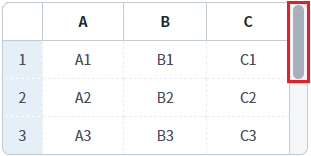
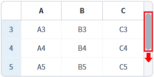
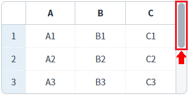
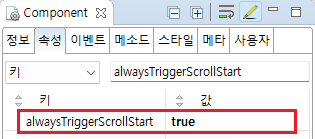

GridView의 'alwaysTriggerScrollStart' 속성을 'true'로 설정하여 세로 스크롤이 최상단에 닿을 때마다 'onscrollstart' 이벤트가 발생하도록 한 예제입니다.
이 속성의 설정 값에 따른 기능은 아래와 같습니다.
false: [default] GridView의 세로 스크롤이 최상단에 닿을 때 최초 1회 'onscrollstart' 이벤트 발생.
true: GridView의 세로 스크롤이 최상단에 닿을 때 마다 'onscrollstart' 이벤트 발생.
'onscrollstart' 이벤트 매회 발생 시키기
'onscrollstart' 이벤트 최초 1회 발생 시키기
예제 영역 ''onscrollstart' 이벤트 매회 발생 시키기'에 구성된 GridView에서 테스트합니다.1
STEP 1: 초기 상태 확인하기
GridView에 세로 스크롤이 있습니다.
Image 1.브라우저(Chrome) 실행 예시

2
STEP 2: 세로 스크롤을 아래로 이동 시킵니다.
Image 2.브라우저(Chrome) 실행 예시 - 스크롤이 아래로 이동된 상태

3
STEP 3: 세로 스크롤을 최상단으로 이동 시킵니다.
Image 3.브라우저(Chrome) 실행 예시 - 스크롤이 최상단으로 이동된 상태

4
STEP 4: 실행 결과를 확인합니다.
세로 스크롤을 최상단 닿으면 'onscrollstart' 이벤트가 발생되고 이벤트 핸들러가 실행되어 로그가 출력됩니다. (세로 스크롤이 최상단에 닿을 때 마다 이벤트가 발생합니다.) 예제 영역 '로그 확인' 또는 브라우저의 개발자 도구의 콘솔(console)탭에 출력된 로그를 확인합니다.
Example 1.Log
[10:29:01] scwin.grd_exam1_onscrollstart alwaysTriggerScrollStart:true - 매회 발생
5
STEP 5: STEP2, STEP3을 반복하고 출력된 로그를 확인합니다.
매회 로그가 출력됩니다.
Example 2.Log
[10:29:01] scwin.grd_exam1_onscrollstart alwaysTriggerScrollStart:true - 매회 발생 [10:29:20] scwin.grd_exam1_onscrollstart alwaysTriggerScrollStart:true - 매회 발생
예제 영역 '(기본 설정) 'onscrollstart' 이벤트 최초 1회 발생 시키기'에 구성된 GridView에서 테스트합니다.1
STEP 1: 초기 상태 확인하기
GridView에 세로 스크롤이 있습니다.
Image 4.브라우저(Chrome) 실행 예시
2
STEP 2: 세로 스크롤을 아래로 이동 시킵니다.
Image 5.브라우저(Chrome) 실행 예시 - 스크롤이 아래로 이동된 상태
3
STEP 3: 세로 스크롤을 최상단으로 이동 시킵니다.
Image 6.브라우저(Chrome) 실행 예시 - 스크롤이 최상단으로 이동된 상태
4
STEP 4: 실행 결과를 확인합니다.
세로 스크롤을 최상단 닿으면 'onscrollstart' 이벤트가 최초 1회 발생되고 이벤트 핸들러가 실행되어 로그가 출력됩니다.
로그 영역 '로그 확인' 또는 브라우저의 개발자 도구의 콘솔(console)탭에 출력된 로그를 확인합니다.
Example 3.Log
[10:25:33] scwin.grd_exam2_onscrollstart alwaysTriggerScrollStart:false - 최초 1회 발생
5
STEP 5: 'STEP2', 'STEP3'을 반복하여 로그를 확인합니다.
로그가 출력되지 않습니다.
'onscrollstart' 이벤트 설정 방법은 아래의 문서에 작성되어 있습니다.
링크 : [예제 가이드] [GridView] Event - onscrollstart (세로 스크롤이 이동하여 최상단에 닿을 때 발생)
1
GridView의 속성을 정의합니다.
[필수] alwaysTriggerScrollStart="true"
스크롤이 최상단에 위치할 때 마다 'onscrollstart' 이벤트를 발생 시키기
Image 7.웹스퀘어 스튜디오의 Component View - 속성 설정 예시

Example 4.Source
<!-- gridView 의 소스 본문 예시 --> <w2:gridView alwaysTriggerScrollStart="true"> <!-- 중략 --> </w2:gridView>
onscrollstart
alwaysTriggerScrollStart
onscrollend